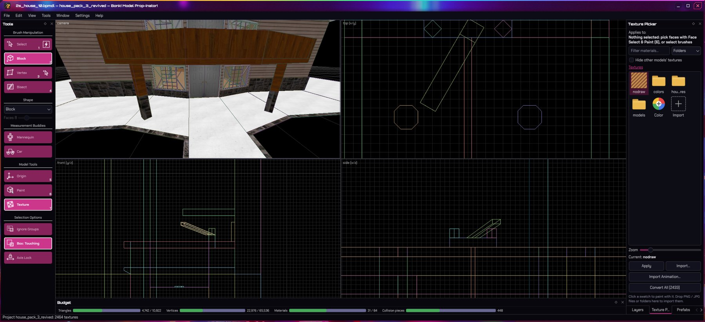

G Grab
Hold G and drag to move the selection, in any 2D view or along the floor in 3D. Bring the mouse back to where you started and it snaps exactly home, even off the grid.
Native on Linux & Steam Deck · also on Windows
Bonk! Model Prop-inator! is a brush modeler that turns blocks, wedges and cylinders into real GMod props: MDL, VMT and VTF, compiled with Garry's Mod's own studiomdl and dropped straight into your addons folder.
1.0 Beta · AppImage, Flatpak & Windows · free and open source (GPL-3.0) · GitHub

Made on Linux, for Linux. Bazzite, SteamOS, Fedora, Arch, Ubuntu, openSUSE: any desktop works. Bonk finds Steam, Garry's Mod and Proton on its own, Flatpak Steam included.
The headline tools
Bonk's hold-key editing works from anywhere in a view: no hunting for handles. Moves lock to one axis so things stay lined up (hold Alt to free them), and the corner of the view always says what the held key is doing.
Hold G and drag to move the selection, in any 2D view or along the floor in 3D. Bring the mouse back to where you started and it snaps exactly home, even off the grid.
Hold S to stretch a brush or a whole group from anywhere in the view. In Vertex select, S scales just the vertices you picked about their center.
Hold Shift and drag to carry off a copy, just like Hammer's clone drag. Ctrl+C / Ctrl+V work across models, projects and Bonk windows, and the textures come along.
Also on a key: R rotate · H hide · , . mirror · J join brushes · right-drag Quick Draw for walls and floors · ` walk mode
JPG & PNG import
Drag PNG or JPG files (or whole folders) onto the Texture Picker and Bonk writes the VTFs itself. No VTFEdit, no vtex, no extra tools.
Bonk vs Hammer
If you've built in Hammer, you already know Bonk: four views, brushes, the same alignment tools and Hammer-style keys. The difference is what comes out the other end. Hammer makes maps; turning brushes into a prop usually means Propper or an external modeler and a hand-written QC. Bonk goes straight from brushes to a compiled, ready-to-upload prop.
| Bonk! | Hammer (Source SDK) | |
|---|---|---|
| Runs natively on Linux & Steam Deck | Yes | Windows only (Wine / Proton workarounds) |
| Runs on Windows | Yes, no Proton needed there | Yes |
| Four-view brush editing | Yes | Yes |
| Texture shift, scale, rotate, justify, Texture Lock | Yes | Yes |
| Output | Compiled prop: MDL + VMT + VTF | Map (BSP); props need Propper or another modeler |
| One-click compile to an addon folder | Yes, with GMod's own studiomdl | No |
| PNG / JPG → VTF built in | Yes | No, needs VTFEdit or vtex |
| Material (VMT) editor | Yes, with live preview | No, edit VMTs by hand |
| Collision model | Draw your own or generate it, with a live budget | Not applicable to maps |
| Hold-key Grab / Size / Copy from anywhere | Yes | Drag handles; Shift-drag clones |
| Walk the model as the player | Yes, on its collision | Compile and load the map in game |
| Spawnlists & Workshop publishing | Yes | No |
| Opens Hammer .vmf files | Yes, with alignment, groups and visgroups | Its own format |
| Builds whole maps | No, props only | Yes |
| License | Free, open source (GPL-3.0) | Free with the SDK, closed source |
Already have a prop sketched in Hammer? File → Import VMF… brings its brushes in with their texture alignment, and its materials from a folder or a Workshop .gma.
Everything else
Blocks, cylinders, wedges, spikes and orbs with a sides slider. Right-drag to sketch walls and floors.
Move, rotate and scale vertices on several brushes at once. Clip brushes with Bisect. Brushes stay convex.
Shape a collision layer yourself, or generate a complete or simplified one, with mass presets and a Budget bar.
A player-sized mannequin and a jeep-sized car to check scale. They're never compiled.
Material swaps, hidden brushes per skin, bodygroups, LODs and a model preview.
Press ` to walk your model at GMod's player size: jump, crouch and climb steps on its collision.
Spawn menu categories and framed spawn icons with badges, plus publishing and updating Workshop addons.
Bonk starts simple. Flip on Advanced mode for every expert tool. The built-in guide (F1) covers every key.
From nothing to spawn menu
Linux first, Windows too
Latest: see all releases. Every release is built by GitHub Actions from the tagged source.
One file, any distro. Make it executable and run it. Comes with the standalone Spawnlist Creator as a second AppImage.
Download AppImagechmod +x Bonk*.AppImage && ./Bonk*.AppImage
Both Bonk and the Spawnlist Creator in one bundle. Works with Flatpak Steam.
Download Flatpakflatpak install --user Bonk.flatpak
A zip with everything inside. Unzip it anywhere and run Bonk\bonk.exe. On Windows Bonk runs Garry's Mod's studiomdl, gmad and gmpublish directly, no Proton needed, and finds Steam on its own.
Download for WindowsBonk-windows-x86_64.zip
Double-click Build Bonk.sh. It installs what's missing (in a container on Bazzite, SteamOS and other immutable systems) and adds a launcher.
Build instructions./"Build Bonk.sh"
Steam with Garry's Mod installed (Bonk uses its studiomdl), and on Linux a Proton version from Steam. Bonk finds them automatically.